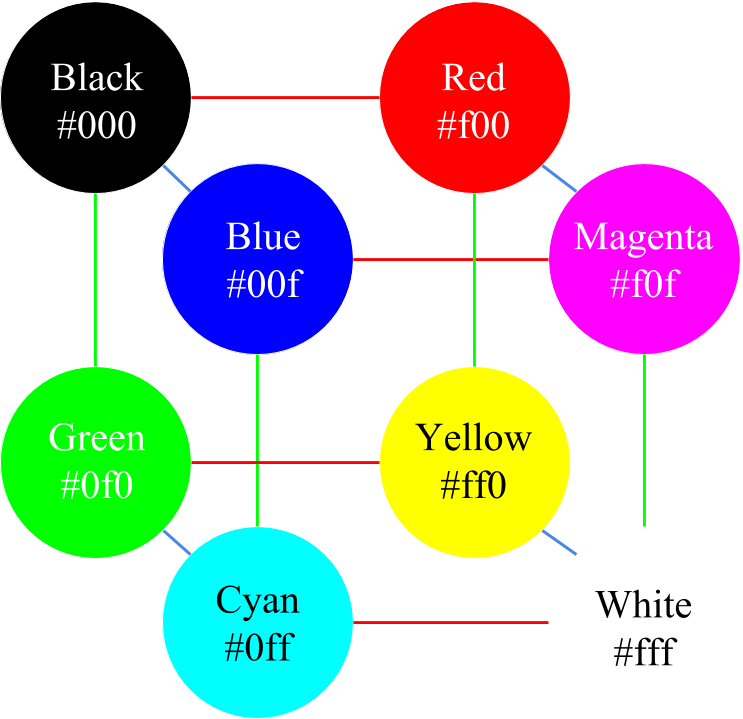

Binary (Base 2) Color Gamut
A binary (base 2) color gamut allows for two possible levels of each color in RGB: on or off. This allows for a complete palette of 23, or 8 colors.
| Intensity | RGB Decimal | Hexadecimal |
|---|---|---|
| 0 (off) | 0 | 00 |
| 1 (full) | 255 | ff |
Hexadecimal values in the chart below are written in shorthand.

Next--the trinary color gamut